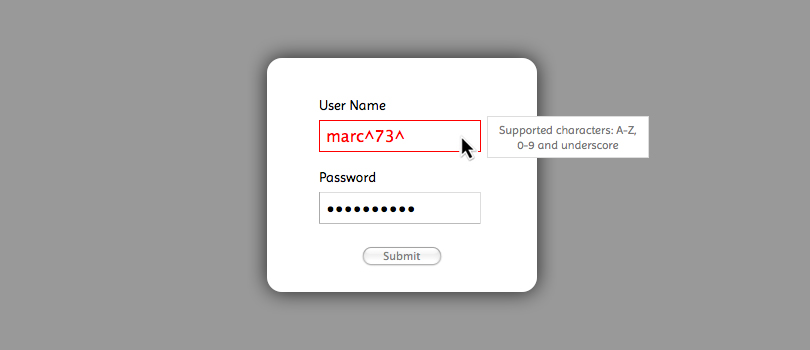

A lightweight, dead simple, and extremely flexible lightbox generator.
Check out the demo provided with this package.
| Filename | Role |
|---|---|
| yalb.min.js | The main script to be included from within your HTML document. |
Getting started couldn't be easier. Create the HTML block you want to use for the lightbox anywhere within the document <body> and use the jQuery selector as describe below. It is important that the root element has height and width attributes defined either inline or from within your style sheet.
$(selector).YALB(options);
Add the following Javascript between the <head></head> tags of your HTML document.
<script src="http://ajax.googleapis.com/ajax/libs/jquery/1.8.3/jquery.min.js">
<script src="/path/to/yalb.min.js"></script>
<script>
$(document).ready(function() {
var content = $('#content').YALB();
$('#trigger').click(function() {
content.YALB('show');
});
});
</script>
..
<div id="content">
Hello World
</div>
<script src="http://ajax.googleapis.com/ajax/libs/jquery/1.8.3/jquery.min.js">
<script src="/path/to/webform.toolkit.min.js"></script>
<script src="/path/to/yalb.min.js"></script>
<script>
$(document).ready(function() {
// generate interactive webform
$('#content').WebformToolkit({
id : 'login',
action : 'http://www.domain.com/handler',
fields : [
{
"label" : "User Name",
"type" : "text",
"name" : "username",
"value" : "",
"maxlength" : "15",
"filter" : "^\\w{0,15}$",
"description" : "",
"error" : "Supported characters: A-Z, 0-9 and underscore",
"required" : "1"
},
{
"label" : "Password",
"type" : "password",
"name" : "password",
"value" : "",
"maxlength" : "15",
"filter" : "^(?!password)(.{0,15})$",
"description" : "",
"error" : "The password entered is not valid",
"required" : "1"
}
]
});
// define lightbox properties
var win = $('#login').YALB({ showSpeed : 200 });
// view login window
win.YALB('show');
</script>
..
<div id="content"></div>
The following options can be passed to the plug-in main function as JSON
| Option | Description | Default Value |
|---|---|---|
| maskColor | color of the window mask using hexadecimal notation | #000000 |
| hideEasing | animation to be used when hiding the lightbox | linear |
| showEasing | animation to be used when viewing the lightbox | linear |
| hideSpeed | speed of the hide animation in milliseconds | 250 |
| showSpeed | speed of the view animation in milliseconds | 500 |
Click here for more information about the available jQuery UI Easing effects.
In order to support older web browsers, specifically Internet Explorer 7, this package requires jQuery 1.8.3. Furthermore, jQuery has recently dropped support for IE8 in version 2, so if there is no compelling reason to support these two web browsers, it is recommended that you upgrade to the latest version of jQuery. If you still need to support IE8 please upgrade to jQuery 1.9+.
This package has been preconfigured to support QUnit headless testing using Travis-CI. If you plan on using another integration tool you will have to create a custom project that combines the use of QUnit and PhantomJS plugins. You can manually run these tests in your web browser by clicking here.
I have included with this package a packed version (2.6 kB) and developers version (unpacked 4.9 kB)
You can always find the latest updates within this projects repository.
This projects repository is currently hosted on Github
https://github.com/nuxy/YALB
For feedback, bug reports, or other comments, feel free to contact me at: devel at mbrooks dot info
This package is distributed in the hope that it will be useful, but without any warranty; without even the implied warranty of merchantability or fitness for a particular purpose.
YALB is provided under the terms of the MIT license.
YALB ©2011-2015 Marc S. Brooks